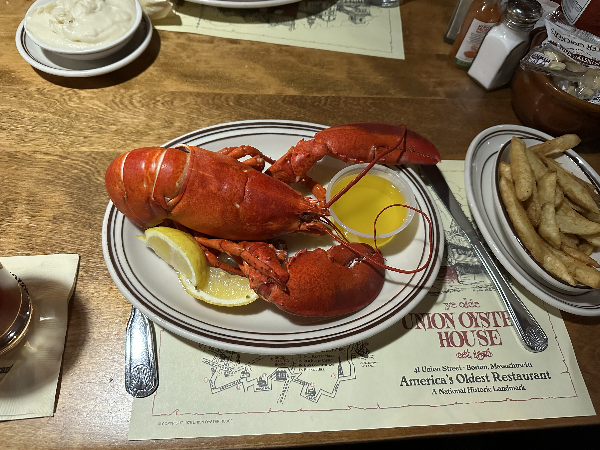

5年次研究留学 @ ハーバード大学

概要
阪大医学部のカリキュラムでは、5年生の1~2月に臨床研究室配属期間があります。
その期間を利用してアメリカのハーバード大学へ1ヶ月間の研究留学をしたので、その活動内容について報告します。
自分はMD-PhDコースに入っておらず、周りに研究留学に行った人もいなかったため、留学先の選定から留学準備まで手探りで行う必要があり、非常に苦労しました。
そこで、今回の記事では、自分が留学に行くまでに行った準備も含めて報告したいと思います。
研究室配属期間での留学を考えている後輩の参考になれば幸いです。
活動報告
留学先について
ボストンにあるハーバード大学及びMGH（Massachusetts General Hospital）に所属するAlzheimer's disease research centerに留学しました。 アルツハイマー研究で著名なDr.Bradley Hymanという教授の研究室に参加し、その中のグループの1つで研究を行いました。
ラボはこんな感じの建物でした。 Hyman研に所属する研究グループがこの建物の1階分を丸々使用しており、研究室の規模の大きさは規格外でした。

ボストンは世界でも有名な大学が多数集まっている学術都市です。 ハーバード大学以外にも、MITやタフツ大学など有名大学が集まっています。 Charles riverという巨大な川が街のそばを流れていたり、Boston commonという大きな公園があったりと非常に自然豊かな街でもあります。 アメリカ独立戦争の舞台となったこともあり、歴史的な建造物や街並みが残る街でもありました。 ただ、留学した時期が2月ということで非常に寒かったです。
研究生活について
平日は毎日9:00~17:00で研究を行っていました。 コアタイムは特になかったので、比較的自由に過ごしていました。
私が参加したグループでは、アルツハイマー病の病態形成に関与するγセクレターゼという酵素をイメージング技術を用いて解析する研究を行っていました。 (Berezovska Lab)。 そのグループで私はImageJを用いた画像解析に取り組みました。 基本的には自身のPCを使って一人で作業していましたが、解析結果について先生方と議論したり、ランチの時にはラボ内の同世代のテクニシャンの方々と話したりと、ラボの人々とも交流することもできました。
1ヶ月の間に研究室内の様々なイベントにも参加しました。 Journal clubという抄読会ではピザやジュースが準備され、飲み食いしながら論文紹介を聞くというアメリカの研究室っぽいイベントを体験することが出来ました。 その他にもミーティングで進捗報告のプレゼンをしたり、グループ内の歓迎会に参加したりと非常に充実した研究生活を送ることが出来ました。
宿について
GuestHouse Yuzuという日本人の方が経営しているゲストハウスに1ヶ月間住んでいました。
その宿を選んだ理由の1つとしては、平日の夜には日本食が付いているということでした。
味もめちゃくちゃ美味しかったです。
物価が高いボストンへの留学において、夜ご飯付きというのはありがたかったです。
オーナーの計らいで宿泊者同士の交流を促してもらったり、宿泊者全員でご飯を食べる機会を設けてもらえたのも良かったです。
他の宿泊者も日本人であり、ほとんどの人が自分と同様でハーバードやMITへの留学のために住んでいました。
住人の中には医師の先生や同い年の医学生も居て、情報交換することが出来ました。
めちゃくちゃおすすめなので、ボストンに行く人がいれば是非！
休日の生活について
土日は研究室が休みだったので、観光したりラボで知り合った人とご飯を食べたりしていました。
ボストンは東海岸に面しており、港があります。
休みの日にはクルーズツアーに参加しました。
また、海が近いということもあり、食べ物としてはロブスターやクラムチャウダーも有名です。
研究室で知り合った先生にロブスターのレストランに連れて行ってもらったりしました。

ニューヨークにも遊びに行きました。 ボストンとニューヨークは非常に近く、amtrak（日本の新幹線のようなもの）を使えば4時間ぐらいで行くことが出来ます。 ニューヨークと言えばブロードウェイ！ということで、アラジンを見ました。 初めてみましたが、とにかく迫力がすごかったです。 日本でもブロードウェイミュージカルが公演されているそうですが、劇への没入感や観客との一体感は本場ならではだと思います。

留学してよかったこと
将来のキャリアを考えるヒントを得ることが出来た
留学先の研究室には様々な国出身の研究者の方が在籍していました。
留学中にはそのような方々とお話する機会が多くあり、今後のキャリアを考える上でのヒントを沢山得ることが出来ました。
今回の留学で最もお世話になった先生は日本人であり、ハーバードで5年以上研究されていました。
その先生からは、アメリカの研究生活のリアルな話や、日本の博士課程を卒業後にアメリカでの研究室のポジションを得た経緯など、先生の実体験に基づいた貴重な情報を沢山教えてもらうことができました。
他にも国籍や年齢問わず様々な先生から、現在のキャリアに至るまでの体験談を聞くことができました。
ハーバード大学で研究者として活躍する能力と活力を兼ね備えた先生方の体験談を聞くことが出来たことは、将来の進路を考える上で必ず役立つと思います。
同世代の留学生から刺激をもらえた
留学先には自分と同じように他国からインターンで来ていた留学生がいました。
境遇が似ていることもあり、お互いの話を沢山することが出来ました。
特に一緒の研究グループに留学に来ていた医学生とは非常に仲良くなることができました。
その子は将来アメリカで脳外科医になるために、1年間休学して留学に来ていました。
アメリカでは脳外科は人気で、他国から来た医師が脳外科のレジデントになるのは非常に難しいとされています。
そのような厳しい状況の中で、研究と並行してUSMLEの勉強をしながら、アメリカで働いている脳外科医に積極的に連絡を取ってネットワークを広げようと努力する姿に非常に刺激を受けました。
普段出会うことのない他国の同世代の医学生と交流し、刺激を受けられたことは、帰国後の勉強のモチベーションにもつながっているように感じます。
英語の重要性を体感できた
月並みな感想ですが、英語の重要性を痛感しました。
医学部の授業の中でも英語の重要性は繰り返し強調されますし、自分でも理解しているつもりでした。
しかし、実際に英語圏で研究生活を送ってみると、英語ができないというハンデがどれだけ大きいかを痛感しました。
個人的な意見としては、スピーキングよりもリスニングの能力がより重要であるように感じました。
自分自身も留学前にはオンライン英会話などを通して英語対策を行っていたこともあり、留学中も日常会話レベルであれば英語で会話することに大きな苦労は感じませんでした。
しかし、研究室での英会話は完全に別物でした。
研究室においても、話す分には簡単な単語を使ったり、多少ゆっくり話すことで何とか言いたいことは伝えられると思います。
ただ、聞くことに関してはネイティブのスピードについていきながら、聞きなじみのない専門用語を瞬時に理解する必要があるため、この点に非常に苦労しました。
正確に聞くことが出来ないと、相手との会話で適切な返答が出来なかったり、セミナーの内容が深く理解できずに困ることも多かったです。
留学を考えている人はスピーキング力だけでなくリスニング力も鍛えておいた方がいいかもしれません。
留学準備
留学に向けた準備は以下のスケジュールで行いました。
後述するようにVISA取得に時間がかかるため、留学先はできるだけ早く確定できるように動くことをお勧めします。
| 時期 | 準備内容 |
|---|---|
| 4年生 2月 | IELTSに向けて英語学習開始 |
| 5年生 4月 | 留学先探し |
| 5年生 5月 | IELTS受験 |
| 5年生 8月 | 留学先確定、先生とのインタビュー |
| 5年生 11月 | VISA取得 |
| 5年生 2月 | いざ留学！ |
英語学習
大学のカリキュラム内で研究留学に行くためには、秋ごろまでにIELTSやTOFELで規定のスコアを取る必要があります。
（IELTSはOverall 6.0以上）
4年生の2月頃（留学の約1年前）から英語の勉強を始めました。
参考書や過去問を通してライティングやスピーキングの対策をしたり、オンライン英会話でリスニングやスピーキングの練習をしました。
5月にIELTSを受けて、Overall 6.0をギリギリ取得しました。
リスニングとスピーキングには最後まで苦労しました。
IELTS受験後も留学に向けてオンライン英会話などは継続していました。
留学先の選定
阪大医学部には海外に協定校があり、6年生の4~6月には希望すれば海外で臨床留学を行うことが出来ます。 しかし、研究留学できる協定校は（自分の知る限りでは）存在しないので、自分で探す必要があります。
研究留学したい場合、2通りの方法があります。 1つ目は自身で留学先にアプライする方法ですが、これはかなり厳しいと思います。 2つ目の方法は、大学の先生に留学先を紹介してもらう方法です。 これが一番現実的です。 普段から研究室に行っている人は、研究室の先生に紹介してもらうのが一番確実かと思います。 研究室に行っていない人や研究室からの紹介が厳しい人は、実習などで担当してもらった先生に聞いてみるといいと思います。
自分は普段お世話になっている研究室からの紹介が難しそうだったので、実習期間中に興味がある科の先生に聞いて回りました。 留学先探しのコツとしては、自分が興味のあることを明確にして、積極的に先生に聞いてみることだと思います。 たまたま出会った先生が自分の興味に合った留学先を紹介してもらえる可能性は高くないですが、留学先の希望をしっかり伝えていれば、興味に合った留学先を知っていそうな先生を紹介してもらえる場合もあります。 学生が思っているより、先生は熱意ある学生に対して協力的なので、迷惑にならない程度に頼るといいと思います。
費用について
ハーバード大学のあるボストンは物価が非常に高く、多額の留学費用が掛かりました。 以下に特にかかったお金について記載します。 これらに食費や観光費など諸々の費用を加えると、1ヶ月の留学で80万円ほどかかりました。 （当時1ドル140円程度でした。）
- 航空機代：約18万円
関空からボストンへの直通便なら往復30万円を優に超えるところ、エアカナダを使ってカナダ経由の便にすることで大幅に費用削減できました。 乗り遅れたら終わりなので、カナダでの乗り換えはめちゃくちゃ緊張しました。 - 宿泊費：約30万円
上述したように、日本人の方が経営するゲストハウスに泊まりました。 - VISA取得費：約5万円
VISA取得の面接費用として約2万円、SEVIS登録費用で約3万円かかりました。 - IELTS受験費：約2万5千円
1回あたり2万5千円ぐらいします。 高すぎます。 1回で目標スコア取れないと更に2万5千円かかると思えば自然と勉強も頑張れます。 - 食費や観光費：約20万円
個人差が最も大きい出費なので参考程度にしてください。
留学には行きたいが、お金がないという人もいると思います。
自分もその1人だったので、留学に向けて給付型奨学金に応募しました。
私は運よく以下の2つの学内奨学金に採択してもらうことが出来ました。
- 岸本基金奨学助成金（https://www.ichou.or.jp/kishimoto/01/）
1年で120万円を支給してもらえました。 各学年で2名程度しか採択されないため競争率は高いですが、ダメ元でも応募してみる価値はあると思います。 - 岸本国際交流奨学金（https://www.med.osaka-u.ac.jp/education/students/format/assist-2）
留学に際して最大20万円支給してもらえる奨学金。 家賃のみ自己負担だったので15万円支給してもらえました。
私は上の2つの奨学金で留学費用を工面できそうだったので申し込みませんでしたが、その他にも奨学生を募集している民間団体もたくさんあるので、調べてみるといいと思います。
参考サイト：https://tobitate-mext.jasso.go.jp/scholarshipsearch/
VISA取得について
自分は今回Student Internという扱いで留学したので、J-1 VISAを取得しました。
手続きは結構大変なので余裕を持って申請することをお勧めします。
特に、大学や大使館に提出する申請書類の準備等がとても大変でした。
単純に提出書類の種類が多いということもありますが、高校の卒業証明書や奨学金の受給証明書などは英語で発行してもらう必要があるため、書類の準備にも時間がかかりました。
自分の場合は、留学先確定からVISA取得まで3-4か月ぐらいかかりました。
留学に際してVISAが必要になる場合は、できれば留学の半年前、遅くとも4か月前には動き始められるとよいと思います。
海外保険について
学研災付帯海外留学保険という保険に入りました。
これは学研災に入っている大学生が海外留学する際に申し込める保険です。
ほとんどの阪大医学部生は入学時に学研災に入っていると思うので問題なく加入できると思います。
自分の場合は補償内容や費用を考慮してこれが最善だと思って申し込みましたが、留学先や期間によって変わってくるので、補償内容や金額は念のため自分でも確認することをお勧めします。
注意すべき点として、申し込みがめちゃくちゃむずいです。 医学部教育センターと大学生協を三周ぐらいした挙句、大阪大学国際交流センターというところに聞きに行くと交換留学用のパンフレットをもらうことができ、その中に申し込み方法が書いてあったので無事申請することが出来ました。
まとめ
留学は準備が非常に大変です。 お金の準備はもちろん、英語の勉強や先生との交渉、書類の提出など多くの準備を行う必要があります。
しかし、学部生のうちに留学に行く価値は必ずあると思います。 研究成果が求められるポスドクでの留学とは異なり、学部生での留学は比較的気楽に行くことが出来ます。 振り返ってみると、英語能力や研究実績が十分でない状態でも有名大学の研究室に留学できたのは、学部生の特権であったと感じました。 また、将来の本格的な留学への前段階としても非常に有用だと感じました。 1ヶ月という短い間だけでも、実際に海外での研究生活を体験することにより、将来留学するために準備すべきことが何となくわかるようになった気がします。 自分のように、将来何となく海外で過ごしてみたいという気持ちが少しでもある人は、是非学部生のうちに留学に行くことをお勧めします。
この記事が研究留学を考えている阪大医学部生の参考になれば幸いです。
- 前の記事 : MatterGPT: Mattermostで動作するChatGPT連携チャットボット
- 次の記事 : single cell解析における遺伝子発現量の可視化
- 関連記事 :